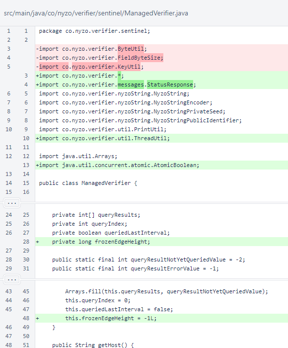
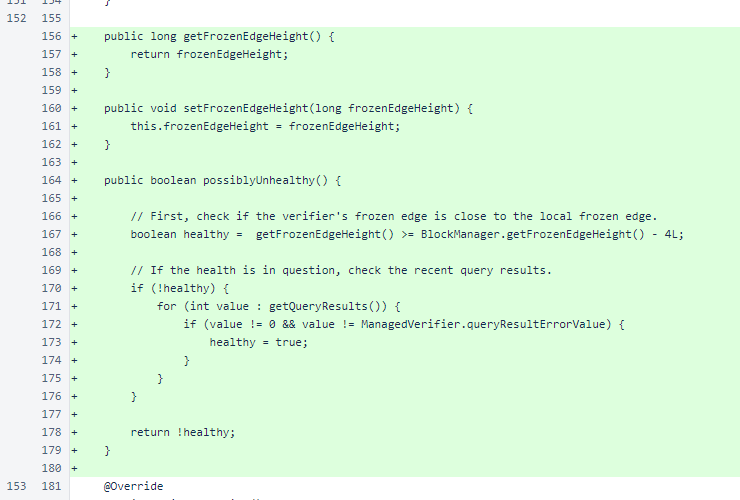
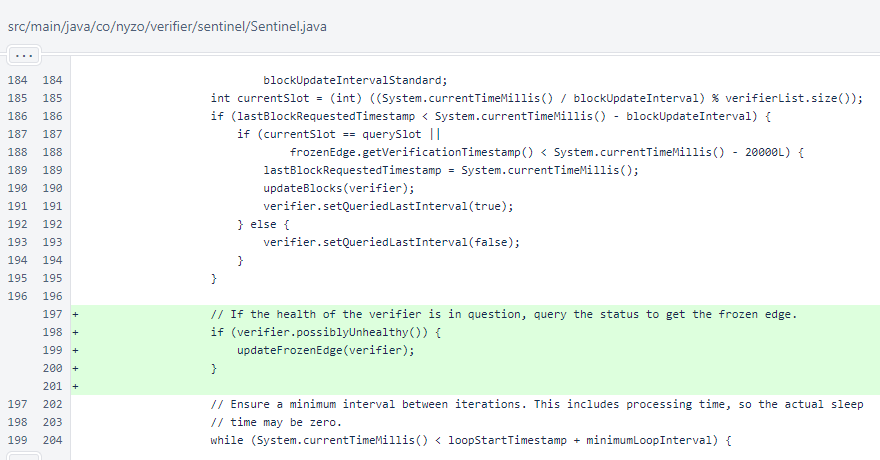
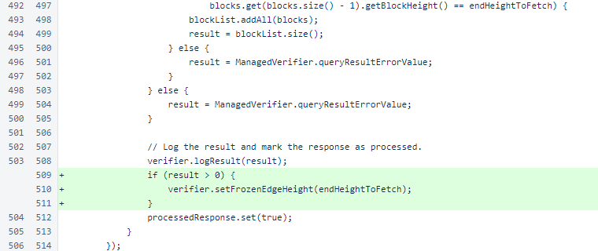
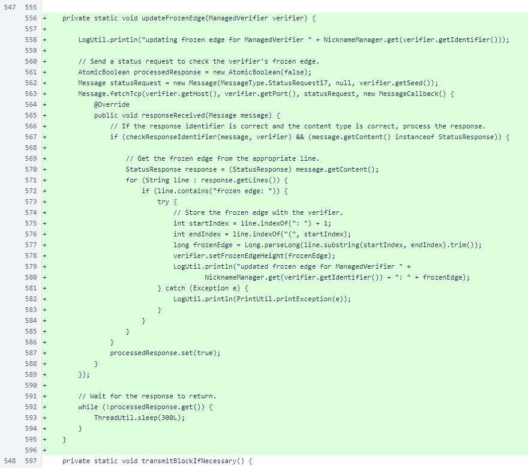
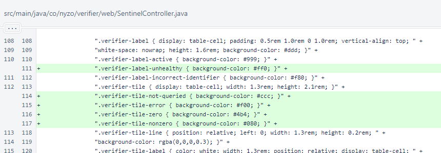
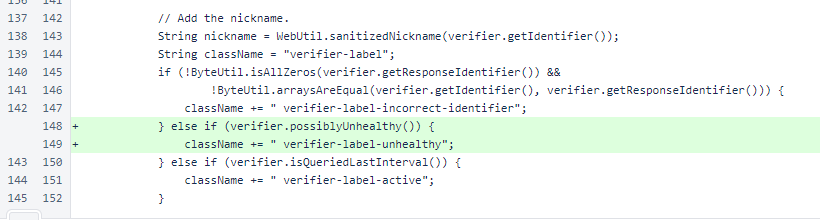
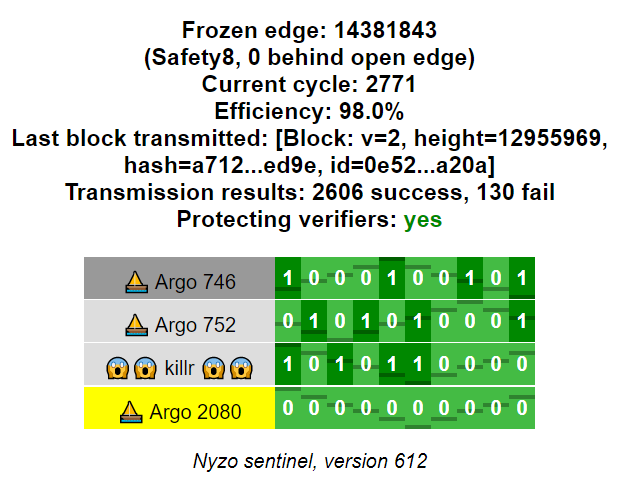
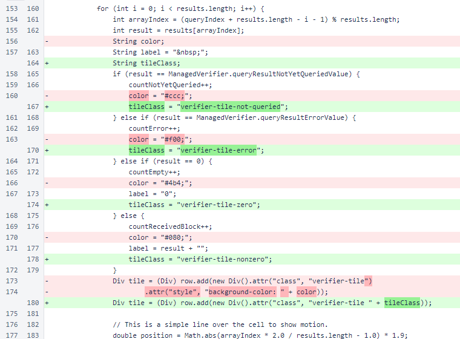

Nyzo version 612 (commit on GitHub) adds a sentinel indication when a verifier is suspected to be unhealthy.
This version affects the sentinel only.
While the Nyzo website has long displayed suspected verifier-health issues, the sentinel did not offer a similar indication. In the interest of improving decentralization of health monitoring, this version adds a sentinel indication when a verifier appears to be having difficult tracking the blockchain.
The frozenEdgeHeight field was added to the ManagedVerifier class to allow comparison of the verifier's frozen edge to the sentinel's frozen edge.
Accessor and mutator methods for the new field were added, and the possiblyUnhealthy() method was added to provide a consistent determination of whether a verifier's health is of concern.
In the sentinel's run loop for a verifier, an update of the frozen edge is now performed whenever the results returned by regular block requests do not provide enough information to ensure that the verifier is properly tracking the blockchain.
In Sentinel.updateBlocks(), the frozen edge of the verifier is now advanced based on the blocks it returns.
The Sentinel.updateFrozenEdge() method gets the frozen edge of a ManagedVerifier by sending a StatusRequest17 message and extracting the frozen edge from the StatusResponse. While this is not elegant, it is the most efficient way to get the frozen edge height of a verifier, and it did not require the addition of a new message type.
In SentinelController.verifierTable(), a CSS class was added to indicate an unhealthy verifier with the label. Classes were also added to color-code the tiles, replacing the inline CSS previously applied to the tiles.
If a verifier's health is in question, the verifier-label-unhealthy CSS class is applied.
The following image shows the sentinel interface with this new functionality. Because ⛵ Argo 2080 has not provided blocks recently, its health is in question. The status request, which updates the verifier's frozen edge without requesting a block, would suppress this warning if ⛵ Argo 2080 provides a response indicating that its frozen edge is close to the sentinel's frozen edge.
Tile classes are now used instead of colors. This does not change the appearance of the page. It only improves the quality of the HTML.
